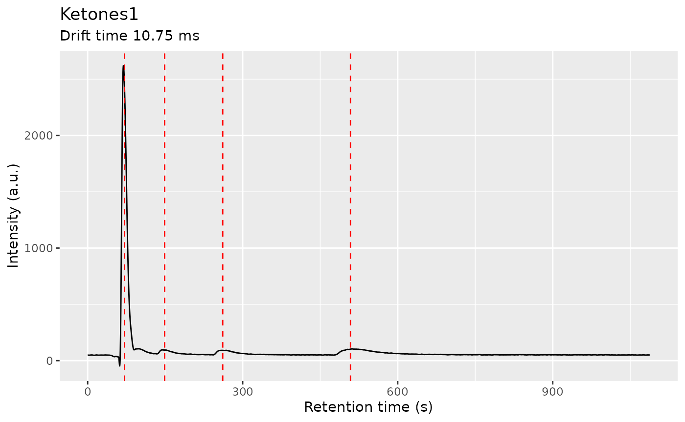
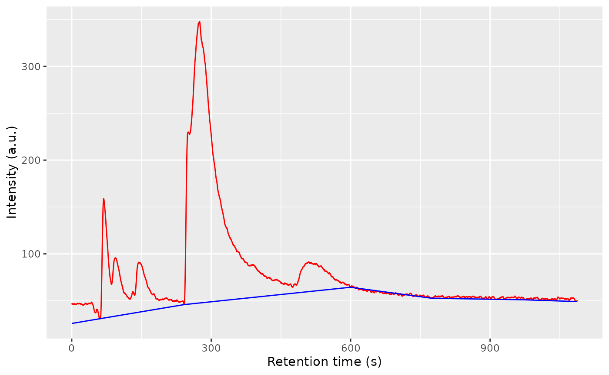

Introduction to GCIMS
GCIMS authors
2023-02-21
introduction-to-gcims.RmdAbstract
An introduction to the GCIMS package, showing the most relevant functions and a proposed workflow. This includes loading demo samples, adding sample annotations, preprocessing the spectra, alignment, detecting peaks and regions of interest (ROIs), clustering of ROIs across samples, peak integration and building a peak table.
The GCIMS package allows you to import your Gas Chromatography - Ion Mobility Spectrometry samples, preprocess them, align them one to each other and build a peak table with the relevant features.
Enable parallellization of the workflow, here we use three cores:
show_progress_bar <- interactive() && is.null(getOption("knitr.in.progress"))
# disable parallellization: (Useful for better error reporting)
#register(SerialParam(progressbar = show_progress_bar), default = TRUE)
# enable parallellization with 3 workers (you can use more if you have them):
register(SerialParam(), default = TRUE)
register(SnowParam(workers = 3, progressbar = show_progress_bar, exportglobals = FALSE), default = TRUE)This vignette will use a small dataset consisting of a mixture of three ketones.
Downloading the dataset
Download the “threeketones” dataset:
# The folder where we will download the samples:
samples_directory <- "threeketones"
# Download the ketones dataset:
tryCatch({
download_three_ketones_dataset(samples_directory)
message("Download successful")
}, error = function(e) {
message("The download of the samples did not succeed. The vignette can't continue.")
message(conditionMessage(e))
knitr::knit_exit()
})
#> Download successfulCheck that the files are downloaded:
list.files(samples_directory)
#> [1] "211105_095453.mea.gz" "211105_135744.mea.gz" "211108_141524.mea.gz"
#> [4] "annotations.csv" "README.txt"Import data
Please start by preparing an Excel spreadsheet (or a CSV/TSV file if
you prefer) with your samples and their annotations. Please name the
first column SampleID and the second column
Filename. We will use those annotations in plots.
annotations <- read.csv(file.path(samples_directory, "annotations.csv"))
annotations
#> SampleID Filename Analyst
#> 1 Ketones1 211105_095453.mea.gz Celia
#> 2 Ketones2 211105_135744.mea.gz Meryl
#> 3 Ketones3 211108_141524.mea.gz CeliaIf you need to create your annotations.csv file for your
samples, please follow the example from
help("create_annotations_table") for further details.
Create a GCIMSDataset object
dataset <- GCIMSDataset(
annotations,
base_dir = samples_directory,
on_ram = TRUE # You probably should set this to FALSE if you have more
# than a handful of samples. See ?GCIMSDataset.
)
dataset
#> A GCIMSDataset object:
#> - With 3 samples on RAM
#> - No phenotypes
#> - No previous history
#> - Pending operations:
#> - read_sampleMost operations on the dataset are not executed until
you need to get the actual samples or data. This is done to perform them
in batch, more efficiently, if possible. However, you can manually
realize the GCIMSDataset object so it executes
all its pending operations. We can see how the “read_sample” pending
operation becomes part of the dataset history:
realize(dataset)
dataset
#> A GCIMSDataset object:
#> - With 3 samples on RAM
#> - No phenotypes
#> - History:
#> - read_sample
#> - No pending operationsExplore one sample:
ket1 <- getSample(dataset, sample = "Ketones1")
plot(ket1, rt_range = c(0, 1000), dt_range = c(7.5, 17))
dt_k1 <- dtime(ket1)
tis_k1 <- getTIS(ket1)
ggplot(dplyr::filter(data.frame(x = dt_k1, y = tis_k1), x >1)) +
geom_line(aes(x = x, y = y)) +
scale_x_continuous(name = "Drift time (ms)", limits = c(7, 17)) +
scale_y_continuous(name = "Intensity (a.u)", trans = cubic_root_trans())
#> Warning: Removed 2848 rows containing missing values (`geom_line()`).
rt_k1 <- rtime(ket1)
ric_k1 <- getRIC(ket1)
ggplot(dplyr::filter(data.frame(x = rt_k1, y = ric_k1))) +
geom_line(aes(x = x, y = y)) +
scale_x_continuous(name = "Retention time (ms)", limits = c(55, 900)) +
scale_y_continuous(name = "Intensity (a.u)")
#> Warning: Removed 2908 rows containing missing values (`geom_line()`).
Plot the RIC and the TIS to get an overview of the dataset:
plotTIS(dataset)
plotRIC(dataset)
Filter the retention and drift time of your samples
filterRt(dataset, rt = c(0, 1300)) # in s
filterDt(dataset, dt = c(1, 17)) # in ms
dataset
#> A GCIMSDataset object:
#> - With 3 samples on RAM
#> - No phenotypes
#> - History:
#> - read_sample
#> - Pending operations:
#> - filterRt:
#> rt_range:
#> - 0.0
#> - 1300.0
#> - filterDt:
#> dt_range:
#> - 1.0
#> - 17.0
ket1afterfilter <- getSample(dataset, sample = "Ketones1")
ket1afterfilter
#> A GCIMS Sample
#> with drift time from 1 to 17 ms (step: 0.00667 ms, points: 2401)
#> with retention time from 0 to 1299.87 s (step: 0.39 s, points: 3334)Smoothing
You can remove noise from your sample using a Savitzky-Golay filter, applied both in drift time and in retention time.
The Savitzky-Golay has two main parameters: the filter length and the filter order. It is recommended to use a filter order of 2, but the filter length must be selected so it is large enough to remove noise but always smaller than the peak width to prevent distorting the peaks.
You can apply the smoothing filter to a single IMS spectrum or to a single chromatogram to see how noise is removed and how peaks are not distorted. Tweak the filter lengths and, once you are happy, apply the smoothing filter to all the dataset.
one_ims_spec <- getSpectrum(ket1afterfilter, rt_range = 97.11)
one_ims_smoothed <- smooth(one_ims_spec, dt_length_ms = 0.14, dt_order = 2)
to_plot <- dplyr::bind_rows(
NoSmoothed = as.data.frame(one_ims_spec),
Smoothed = as.data.frame(one_ims_smoothed),
.id = "Status"
)
ggplot(to_plot) +
geom_line(aes(x = drift_time_ms, y = intensity, colour = Status)) +
coord_cartesian(xlim = c(7, 10)) +
labs(x = "Drift time (ms)", y = "Intensity (a.u.)")
ggplot(to_plot) +
geom_line(aes(x = drift_time_ms, y = intensity, colour = Status)) +
coord_cartesian(xlim = c(7, 10), ylim = c(0, 300)) +
labs(x = "Drift time (ms)", y = "Intensity (a.u.)")
one_chrom <- getChromatogram(ket1afterfilter, dt_range = 10.4)
one_chrom_smoothed <- smooth(one_chrom, rt_length_s = 3, rt_order = 2)
to_plot <- dplyr::bind_rows(
NoSmoothed = as.data.frame(one_chrom),
Smoothed = as.data.frame(one_chrom_smoothed),
.id = "Status"
)
ggplot(to_plot) +
geom_line(aes(x = retention_time_s, y = intensity, colour = Status)) +
labs(x = "Retention time (s)", y = "Intensity (a.u.)")
ggplot(to_plot) +
geom_line(aes(x = retention_time_s, y = intensity, colour = Status)) +
coord_cartesian(xlim = c(200, 250)) +
labs(x = "Retention time (s)", y = "Intensity (a.u.)")
You can also apply it to a single sample:
ket1_smoothed <- smooth(
ket1afterfilter,
rt_length_s = 3,
dt_length_ms = 0.14,
rt_order = 2,
dt_order = 2
)
cowplot::plot_grid(
plot(ket1afterfilter, rt_range = c(0, 500), dt_range = c(6, 16)),
plot(ket1_smoothed, rt_range = c(0, 500), dt_range = c(6, 16)),
ncol = 2
)
Or to the whole dataset (the default order is 2 for both axes):
Decimation
One way to speed up calculations and reduce the memory requirements is to decimate the matrix, by taking 1 every Nd points in drift time and 1 every Nr points in retention time.
ket1_decimated <- decimate(ket1_smoothed, rt_factor = 1, dt_factor = 2)
ket1_spec_smoothed <- getSpectrum(ket1_smoothed, rt_range = 300, dt_range = c(7, 13))
ket1_spec_decimated <- getSpectrum(ket1_decimated, rt_range = 300, dt_range = c(7, 13))
cowplot::plot_grid(
plot(ket1_spec_smoothed) + labs(title = "Before decimation"),
plot(ket1_spec_decimated) + labs(title = "After decimation"),
ncol = 1
)
Once you are satisfied with de decimation factor (if you want to apply it) just use it on the whole dataset:
dataset <- decimate(dataset, rt_factor = 1, dt_factor = 2)One alternative is to start with a higher decimation factor (lets say 2 in retention time and 4 in drift time) and, after running the pipeline successfully, repeat it without decimation.
Alignment
Pressure and temperature fluctuations as well as degradation of the chromatographic column are some of the causes of misalignments in the data, both in retention and drift time.
In order to be able to compare samples to each other, we align the samples.
The alignment will happen first in drift time and afterwards in retention time. To correct the drift time, we will use a multiplicative correction \(t_d' = k t_d\). The correction factor \(k\) will be estimated using the RIP positions for each sample, extracted from the Total Ion Spectra. The correction factors are typically between 0.9 and 1.1. The reference RIP position is the median of all the RIP positions to minimize the distortions.
One of the checks to verify the alignment in drift time is not failing is by plotting the Total Ion Spectra of several samples before and after the alignment and see the effect of the correction.
The retention time will be corrected using Parametric Time Warping, where \(t_r' = P(t_r)\), and \(P\) is a polynomial of typically not a high order (1-5). For efficiency reasons, the polynomial will be estimated using the Reverse Ion Chromatogram of the samples to be aligned.

plotRIC(dataset)
align(dataset)
realize(dataset)
plotRIC(dataset)
align_plots <- alignPlots(dataset)
cowplot::plot_grid(plotlist = align_plots, ncol = 1)
Peaks
First try one sample and optimize the noise_level
parameter there. Change values from 0.5 to 4 to explore. If it’s higher
less peaks will be found. If it is too low peaks may appear broken into
two regions or false detections may occur.
# Remove this extra register()
ket1 <- getSample(dataset, "Ketones1")
ch1 <- getChromatogram(ket1, dt_range = 10.75)
# I don't like the _xunits in the argument names, I'll find an alternative soon
ch1 <- findPeaks(
ch1,
verbose = FALSE,
length_in_xunits = 3,
peakwidth_range_xunits = c(10, 25),
peakDetectionCWTParams = list(exclude0scaleAmpThresh = TRUE),
extension_factor = 0,
iou_overlap_threshold = 0.2,
debug = FALSE
)
peak_list_ch1 <- peaks(ch1)
plot(ch1) + geom_vline(xintercept = peak_list_ch1$apex, color = "red", linetype = "dashed")
ket1 <- findPeaks(
ket1,
rt_length_s = 3,
dt_length_ms = 0.14,
verbose = TRUE,
dt_peakwidth_range_ms = c(0.15, 0.4),
rt_peakwidth_range_s = c(10, 25),
dt_peakDetectionCWTParams = list(exclude0scaleAmpThresh = TRUE),
rt_peakDetectionCWTParams = list(exclude0scaleAmpThresh = TRUE),
dt_extension_factor = 0,
rt_extension_factor = 0,
exclude_rip = FALSE,
iou_overlap_threshold = 0.2
)
#> Using the following scales
#> ℹ Retention time scales: 1, 26, 39, 59, 64
#> ℹ Drift time scales: 1, 11, 17, 25, 30
peak_list_ket1 <- peaks(ket1)
plot(ket1) +
overlay_peaklist(peak_list_ket1, color_by = "PeakID")
Then do it on the whole dataset:
findPeaks(
dataset,
rt_length_s = 3,
dt_length_ms = 0.14,
verbose = TRUE,
dt_peakwidth_range_ms = c(0.15, 0.4),
rt_peakwidth_range_s = c(10, 25),
dt_peakDetectionCWTParams = list(exclude0scaleAmpThresh = TRUE),
rt_peakDetectionCWTParams = list(exclude0scaleAmpThresh = TRUE),
dt_extension_factor = 0,
rt_extension_factor = 0,
exclude_rip = TRUE,
iou_overlap_threshold = 0.2
)
peak_list <- peaks(dataset)
#> Using the following scales
#> ℹ Retention time scales: 1, 26, 39, 59, 64
#> ℹ Drift time scales: 1, 11, 17, 25, 30
#> RIP was detected
#> ℹ - At drift time: [7.50666666666667 - 7.90666666666667] ms
#> ℹ - Maximum RIP intensity at: (dt: 7.78666666666667 ms, rt: 50.31 s)
#> Using the following scales
#> ℹ Retention time scales: 1, 26, 39, 59, 64
#> ℹ Drift time scales: 1, 11, 17, 25, 30
#> RIP was detected
#> ℹ - At drift time: [7.54666666666667 - 7.90666666666667] ms
#> ℹ - Maximum RIP intensity at: (dt: 7.78666666666667 ms, rt: 56.55 s)
#> Using the following scales
#> ℹ Retention time scales: 1, 26, 39, 59, 64
#> ℹ Drift time scales: 1, 11, 17, 25, 30
#> RIP was detected
#> ℹ - At drift time: [7.50666666666667 - 7.90666666666667] ms
#> ℹ - Maximum RIP intensity at: (dt: 7.78666666666667 ms, rt: 51.48 s)You can get any other sample if you like, plot it and plot its peaks on top:
ket2 <- getSample(dataset, "Ketones2")
plot(ket2) +
overlay_peaklist(peaks(ket2)) +
lims(x= c(7.5,15), y = c(0, 500))
#> Scale for x is already present.
#> Adding another scale for x, which will replace the existing scale.
#> Scale for y is already present.
#> Adding another scale for y, which will replace the existing scale.
#> Warning: Removed 15 rows containing missing values (`geom_rect()`).
#> Warning: Removed 15 rows containing missing values (`geom_point()`).
Or plot all the peaks from all the dataset together, overlayed on a single sample:
plt <- plot(ket2) +
overlay_peaklist(peaks(dataset), color_by = "SampleID")
# We could explore the plot interactively:
# plot_interactive(plt)
# Or use a static version to save memory and render it faster:
plt
Clustering
peak_clustering <- clusterPeaks(
peak_list,
distance_method = "euclidean",
dt_cluster_spread_ms = 0.1,
rt_cluster_spread_s = 20,
clustering = list(method = "hclust")
)The peak list, with cluster ids can be plotted on top of a single sample:
peak_list_clustered <- peak_clustering$peak_list_clustered
plt <- plot(ket2) +
overlay_peaklist(peak_list_clustered, color_by = "SampleID")
print(plt)
print(plt + lims(x = c(6, 15), y = c(0, 400)))
#> Scale for x is already present.
#> Adding another scale for x, which will replace the existing scale.
#> Scale for y is already present.
#> Adding another scale for y, which will replace the existing scale.
#> Warning: Removed 39 rows containing missing values (`geom_rect()`).
#> Warning: Removed 39 rows containing missing values (`geom_point()`).
plt <- plot(ket2) +
overlay_peaklist(dplyr::filter(peak_list_clustered, !is.na(cluster)), color_by = "cluster")
print(plt)
print(plt + lims(x = c(6, 15), y = c(0, 400)))
#> Scale for x is already present.
#> Adding another scale for x, which will replace the existing scale.
#> Scale for y is already present.
#> Adding another scale for y, which will replace the existing scale.
#> Warning: Removed 26 rows containing missing values (`geom_rect()`).
#> Warning: Removed 26 rows containing missing values (`geom_point()`).
The resulting cluster sizes (median position of individual clusters) is not a good reference for integration. We are working on this.
plt <- plot(ket2) +
overlay_peaklist(peak_clustering$cluster_stats, color_by = "cluster")
#plot_interactive(plt)
plt + lims(x = c(6, 15), y = c(0, 400))
#> Scale for x is already present.
#> Adding another scale for x, which will replace the existing scale.
#> Scale for y is already present.
#> Adding another scale for y, which will replace the existing scale.
#> Warning: Removed 9 rows containing missing values (`geom_rect()`).
#> Warning: Removed 9 rows containing missing values (`geom_point()`).
Baseline correction
ket1 <- getSample(dataset, "Ketones1")
one_ims_spec <- getSpectrum(ket1, rt_range = 97.11)
plot(one_ims_spec) + coord_cartesian(xlim = c(7, 12))
one_ims_spec <- estimateBaseline(one_ims_spec, dt_peak_fwhm_ms = 0.2, dt_region_multiplier = 12)
to_plot <- data.frame(
drift_time_ms = dtime(one_ims_spec),
Intensity = intensity(one_ims_spec),
Baseline = baseline(one_ims_spec)
)
ggplot(to_plot) +
geom_line(aes(x = drift_time_ms, y = Intensity), color = "red") +
geom_line(aes(x = drift_time_ms, y = Baseline), color = "blue") +
labs(x = "Drift time (ms)", y = "Intensity (a.u.)")
ggplot(to_plot) +
geom_line(aes(x = drift_time_ms, y = Intensity), color = "red") +
geom_line(aes(x = drift_time_ms, y = Baseline), color = "blue") +
coord_cartesian(xlim = c(7, 10), ylim = c(0, 500)) +
labs(x = "Drift time (ms)", y = "Intensity (a.u.)")
one_chrom <- getChromatogram(ket1, dt_range = 10.4)
one_chrom <- estimateBaseline(one_chrom, rt_length_s = 200)
to_plot <- data.frame(
retention_time_s = rtime(one_chrom),
Intensity = intensity(one_chrom),
Baseline = baseline(one_chrom)
)
ggplot(to_plot) +
geom_line(aes(x = retention_time_s, y = Intensity), color = "red") +
geom_line(aes(x = retention_time_s, y = Baseline), color = "blue") +
labs(x = "Retention time (s)", y = "Intensity (a.u.)")
You can also apply it to a single sample:
ket1 <- estimateBaseline(
ket1,
dt_peak_fwhm_ms = 0.2,
dt_region_multiplier = 12,
rt_length_s = 200
)
plot(ket1)
plot(ket1, remove_baseline = TRUE)
cowplot::plot_grid(
plot(ket1, rt_range = c(0, 500), dt_range = c(6, 16)),
plot(ket1, rt_range = c(0, 500), dt_range = c(6, 16), remove_baseline = TRUE),
ncol = 2
)
Or to the whole dataset:
dataset <- estimateBaseline(
dataset,
dt_peak_fwhm_ms = 0.2,
dt_region_multiplier = 12,
rt_length_s = 200
)
realize(dataset)Some clusters:
plot(ket2) +
overlay_peaklist(
peak_clustering$peak_list_clustered,
color_by = "SampleID",
mapping_roi = c(
"dt_min_ms" = "fixedsize_dt_min_ms",
"dt_max_ms" = "fixedsize_dt_max_ms",
"rt_min_s" = "fixedsize_rt_min_s",
"rt_max_s" = "fixedsize_rt_max_s"
)
) +
lims(x = c(6, 12), y = c(0, 400))
#> Scale for x is already present.
#> Adding another scale for x, which will replace the existing scale.
#> Scale for y is already present.
#> Adding another scale for y, which will replace the existing scale.
#> Warning: Removed 34 rows containing missing values (`geom_rect()`).
#> Warning: Removed 47 rows containing missing values (`geom_point()`).
Peak integration
dataset <- integratePeaks(
dataset,
peak_clustering$peak_list,
integration_size_method = "fixed_size",
rip_saturation_threshold = 0.1
)
peak_list <- peaks(dataset)Build peak table
peak_table <- peakTable(peak_list, aggregate_conflicting_peaks = max)
peak_table$peak_table_matrix
#> Cluster08 NA Cluster14 Cluster10 Cluster06 Cluster03 Cluster17
#> Ketones1 286.1551 NA 89.94959 79.89563 50.03299 535.8669 101.4803
#> Ketones2 317.4772 NA 121.71349 91.67827 57.87489 500.3966 177.5513
#> Ketones3 345.9414 NA 107.86073 90.36581 50.78306 551.7133 NA
#> Cluster11 Cluster09 Cluster12 Cluster04 Cluster21 Cluster15 Cluster24
#> Ketones1 80.29613 1399.228 43.86774 28.82509 2281.579 627.5607 245.6123
#> Ketones2 112.30167 1164.095 51.60048 31.27176 2018.413 983.4542 294.6938
#> Ketones3 88.13129 1446.306 59.13701 38.09293 2435.891 841.2746 258.3220
#> Cluster07 Cluster23 Cluster13 Cluster22 Cluster05 Cluster20 Cluster02
#> Ketones1 485.1055 1335.125 1400.486 1387.270 4424.315 8794.791 87.56821
#> Ketones2 428.6557 1095.035 2317.797 1534.135 4842.550 9263.876 71.72692
#> Ketones3 418.2265 1461.980 2237.396 1977.921 4786.573 9342.802 NA
#> Cluster19 Cluster18 Cluster16 Cluster01
#> Ketones1 432.0507 12837.13 NA NA
#> Ketones2 590.4338 13707.02 30.26957 47.80361
#> Ketones3 353.5802 13684.53 35.84527 47.91265Imputation
peak_table_imputed <- imputePeakTable(peak_table$peak_table_matrix, dataset, peak_clustering$cluster_stats)
peak_table_imputed
#> Cluster08 NA Cluster14 Cluster10 Cluster06 Cluster03 Cluster17
#> Ketones1 286.1551 0 89.94959 79.89563 50.03299 535.8669 101.4803
#> Ketones2 317.4772 0 121.71349 91.67827 57.87489 500.3966 177.5513
#> Ketones3 345.9414 0 107.86073 90.36581 50.78306 551.7133 113.2813
#> Cluster11 Cluster09 Cluster12 Cluster04 Cluster21 Cluster15 Cluster24
#> Ketones1 80.29613 1399.228 43.86774 28.82509 2281.579 627.5607 245.6123
#> Ketones2 112.30167 1164.095 51.60048 31.27176 2018.413 983.4542 294.6938
#> Ketones3 88.13129 1446.306 59.13701 38.09293 2435.891 841.2746 258.3220
#> Cluster07 Cluster23 Cluster13 Cluster22 Cluster05 Cluster20 Cluster02
#> Ketones1 485.1055 1335.125 1400.486 1387.270 4424.315 8794.791 87.56821
#> Ketones2 428.6557 1095.035 2317.797 1534.135 4842.550 9263.876 71.72692
#> Ketones3 418.2265 1461.980 2237.396 1977.921 4786.573 9342.802 65.21405
#> Cluster19 Cluster18 Cluster16 Cluster01
#> Ketones1 432.0507 12837.13 30.13690 39.37941
#> Ketones2 590.4338 13707.02 30.26957 47.80361
#> Ketones3 353.5802 13684.53 35.84527 47.91265Session Info:
sessionInfo()
#> R version 4.2.2 (2022-10-31)
#> Platform: x86_64-pc-linux-gnu (64-bit)
#> Running under: Ubuntu 22.04.1 LTS
#>
#> Matrix products: default
#> BLAS: /usr/lib/x86_64-linux-gnu/openblas-pthread/libblas.so.3
#> LAPACK: /usr/lib/x86_64-linux-gnu/openblas-pthread/libopenblasp-r0.3.20.so
#>
#> locale:
#> [1] LC_CTYPE=en_US.UTF-8 LC_NUMERIC=C
#> [3] LC_TIME=en_US.UTF-8 LC_COLLATE=en_US.UTF-8
#> [5] LC_MONETARY=en_US.UTF-8 LC_MESSAGES=en_US.UTF-8
#> [7] LC_PAPER=en_US.UTF-8 LC_NAME=C
#> [9] LC_ADDRESS=C LC_TELEPHONE=C
#> [11] LC_MEASUREMENT=en_US.UTF-8 LC_IDENTIFICATION=C
#>
#> attached base packages:
#> [1] stats graphics grDevices utils datasets methods base
#>
#> other attached packages:
#> [1] GCIMS_0.1.0 ggplot2_3.4.1 BiocParallel_1.32.5
#> [4] BiocStyle_2.26.0
#>
#> loaded via a namespace (and not attached):
#> [1] Rcpp_1.0.10 RcppDE_0.1.7 tidyr_1.3.0
#> [4] snow_0.4-4 rprojroot_2.0.3 digest_0.6.31
#> [7] utf8_1.2.3 plyr_1.8.8 R6_2.5.1
#> [10] signal_0.7-7 stats4_4.2.2 sgolay_1.0.2
#> [13] evaluate_0.20 httr_1.4.4 highr_0.10
#> [16] pillar_1.8.1 rlang_1.0.6 curl_5.0.0
#> [19] jquerylib_0.1.4 S4Vectors_0.36.1 rmarkdown_2.20
#> [22] pkgdown_2.0.7 textshaping_0.3.6 desc_1.4.2
#> [25] labeling_0.4.2 stringr_1.5.0 ProtGenerics_1.30.0
#> [28] munsell_0.5.0 compiler_4.2.2 xfun_0.37
#> [31] pkgconfig_2.0.3 systemfonts_1.0.4 BiocGenerics_0.44.0
#> [34] htmltools_0.5.4 tidyselect_1.2.0 tibble_3.1.8
#> [37] bookdown_0.32 codetools_0.2-19 fansi_1.0.4
#> [40] viridisLite_0.4.1 dplyr_1.1.0 withr_2.5.0
#> [43] MASS_7.3-58.2 MassSpecWavelet_1.65.0 grid_4.2.2
#> [46] jsonlite_1.8.4 gtable_0.3.1 lifecycle_1.0.3
#> [49] magrittr_2.0.3 scales_1.2.1 cli_3.6.0
#> [52] stringi_1.7.12 cachem_1.0.6 reshape2_1.4.4
#> [55] farver_2.1.1 ptw_1.9-16 fs_1.6.1
#> [58] bslib_0.4.2 ragg_1.2.5 generics_0.1.3
#> [61] vctrs_0.5.2 cowplot_1.1.1 tools_4.2.2
#> [64] Biobase_2.58.0 glue_1.6.2 purrr_1.0.1
#> [67] parallel_4.2.2 fastmap_1.1.0 yaml_2.3.7
#> [70] colorspace_2.1-0 BiocManager_1.30.19 mdendro_2.1.0
#> [73] memoise_2.0.1 knitr_1.42 sass_0.4.5